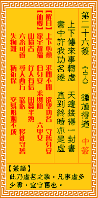

观音灵签第二十六签 【钟馗得道】 |
 | |||
上下传来事总虚 天边接得一封书 书中许我功名事 直待终时亦是无 |
||||
| 【吉凶】 | 下平签 | 【宫位】 | 巳宫 | |
| 【签语】 | 此卦虚名之象，凡事虚多少实宜守旧也。 | |||
| 【解曰】 | 上下心烦 求间不闲 欲望功名 守旧安身 | |||
| 【仙机】 | 此签家宅祈福，自身安，求财阻，交易不成，婚姻不成，六甲女，行人有信，田蚕半熟，六畜可养，寻人西方，公讼亏，移徙守旧，失物 难寻，病祈保，山坟吉。 | |||
| 【详解】 | 四周传来的消息总是不确实，就如天上飞来一笔文件;内容许我有大好的功名，谁知直到最后也只是虚幻一场。 求闲不闲，日下心烦，欲求名利，徒尔虚投。此签接日虚望之象，凡事守旧待时。 是接日虚望之象。宜守旧待时者。不可听信世人之言。宜自吾有主见。以智止谣。何必听人之者。宜向神求之。神灵加护之时。必有转机。因直待终时亦是无者。因此。守之。规谋之。待来日之计用之。易言之。求闲不闻。目下心烦。欲求名利。徒尔虚投者。 此签有”误会一场”之意。奉劝当事人，凡事洞察真相。人与人相处，很容易因为对方的无心之过而造成彼此间的嫌隙。须知在事情尚未明朗之前，不应道听涂说、人云亦云，或就此否定他人。眼见不一定为凭，耳朵听到的是非也不见得是真。应保持内心的清明理智，实事求是。切忌只看表面就果断做下决定，否则很容易引起不必要的纠纷。若与人有误会，何妨自己先退一步，解释清楚、尽释前嫌。所谓”十年修得同船渡”，应当把握人与人之间相处的缘份，互相珍惜。 | |||
| 【典故】 | 中国古代传说人物，相传是唐朝人。生得豹头环眼，铁面虬髯，相貌丑陋，被后人奉为伏魔降妖大神，多帖在大门，以打鬼和驱除邪魔为 能事。传说钟馗文武全才，唐德宗时上京会考，状元及第，但因他生相丑恶，皇帝取消他的状元资格。钟馗愤怒之极，痛骂皇帝，随后抢过武士宝剑，自刎而死。 | |||